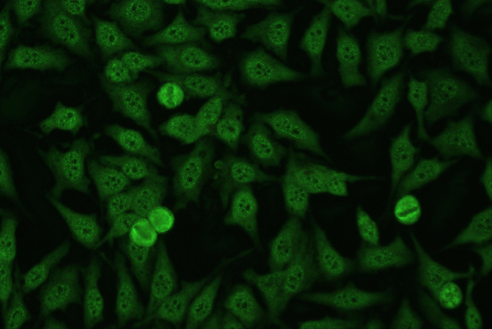
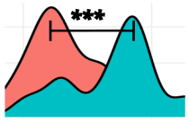
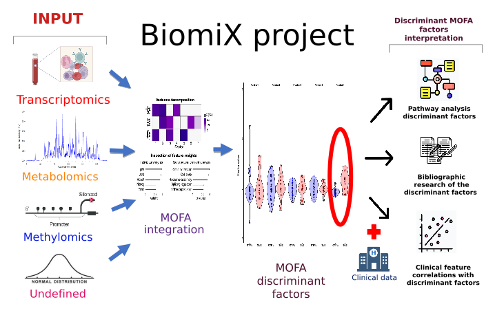

Samples subpopulation
Subgroup your samples based on a your gene panel. Discriminate by biological pathway or a signalling genes to have a deeper answer to you questions .

Subgroup your samples based on a your gene panel. Discriminate by biological pathway or a signalling genes to have a deeper answer to you questions .


Discover our implementation for MOFA factors exploration and comprehension

Explore the statistical approach available in BiomiX and find the most suitable for you .

High customizable pipelines for transcriptomics, metabolomics, methylomics and other data. Choice all the parameters for a perfect personalized analysis.
Feel free to do your research focussing on the biology, we will take care of the analysis.
Data integration requires code skills? Not here.
Here MOFA integration is made available for everyone with a simple interface and parameter choise. Explore deeper you data with our worry-free solution.
